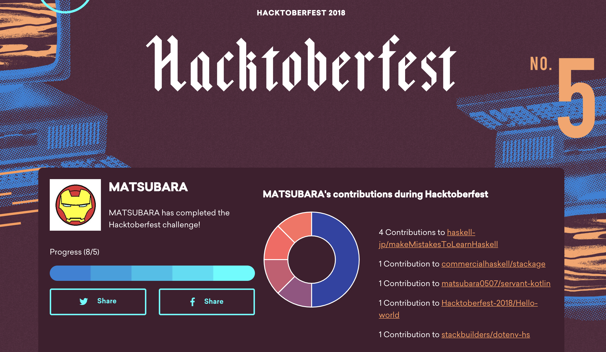

Hacktoberfest 2018 なので PR を5つ以上出してみた
去年に引き続き，Hacktoberfest に参加しました． 2017 は PR を4つでしたが，2018 は5つになったようです．
ちなみに Hacktoberfest がなんなのかや，参加方法については過去記事を見てください（多分変わってなかったはず）．
マイステータス
10月29日時点のステータスはこんな感じ．

ここから見れるが，毎年同じリンクを使ってるっぽいので，2019年にこの記事を見にきた人は役に立たないリンクです(笑) 2019年になりました。
出した PR
自分のリポジトリに対する PR もカウントされてしまうので，それを除くと4リポジトリ7PRです．
- haskell-jp/makeMistakesToLearnHaskell ＃10
- haskell-jp/makeMistakesToLearnHaskell ＃14
- haskell-jp/makeMistakesToLearnHaskell ＃16
- haskell-jp/makeMistakesToLearnHaskell ＃30
- commercialhaskell/stackage ＃4078
- Hacktoberfest-2018/Hello-world ＃2483
- stackbuilders/dotenv-hs ＃101
とはいえ，haskell-jp は僕が活動しているコミュニティだし，stackage は Haskell 版 Gem の登録申請みたいなものだし，Hacktoberfest-2018/Hello-world はただの遊びだし． ちゃんと OSS に出した PR は一つだ…
haskell-jp/makeMistakesToLearnHaskell
このリポジトリは，2018/11/10 に開催予定の Haskell Day 2018 の午前中で行われる予定のハンズオンで使うものです． igrep 氏がメインで作っており，僕は CI を設定したり，Cabal から hpack に移行したり，コンテンツをいじるより環境周りをいじった．
commercialhaskell/stackage
このリポジトリは Haskell のパッケージマネージャーである Stackage の管理リポジトリだ． Hackage というのもあるが，Hackage はパッケージストレージで，Stackage は Hackage にある各パッケージのバージョンのリゾルバを提供している（ビルド可能な組み合わせのこと）． 他の言語と異なり，リゾルバがあることで Haskell アプリケーションの作者が常に各パッケージ間のバージョンなどを細かく管理する必要はなく，特定のリゾルバを設定するだけで良い．
最近，Haskell のデファクトスタンダードなコンパイラ，GHC の最新バージョンである GHC 8.6 がリリースされた． それに伴い，Stackage の Nightly 版が GHC 8.6 へ移行され，多くのパッケージが disable された． 徐々にメジャーパッケージが reenable されたので，僕の作成したパッケージも reenable する PR を送ったのだ．
Hacktoberfest-2018/Hello-world
これは Hacktoberfest が作ったお遊びリポジトリだ（多分）． いろんな言語の Hello, world! と出力するプログラムを集めるリポジトリのようだ．
僕は Hacktoberfest のグローバルステータスの「Highest Pull Request Count Repos」で見かけた（今は read-only になっているので PR は出せない）． 面白そうだったので，まだ無かった Egison のプログラムを PR として出した．
(define $main
(lambda [$args]
(write "Hello, world!\n")))Egison は江木さんという方が学生のころから作ってるパターンマッチ志向という独特のパラダイムを持つプログラミング言語だ． 全然関係ない話だが，今度ワークショップも行われる．
stackbuilders/dotenv-hs
唯一のまともな OSS な PR． dotenv という Haskell パッケージのリポジトリだ． 自分が作ってる CLI ツールに使おうと思って README に書いてある通りに書いて見たら，動かなかったので，その修正 PR を出した．
こう書くと defaultConfig が無いと怒られる．
Main.hs:17:42: error:
Module ‘Configuration.Dotenv’ does not export ‘defaultConfig’
|
17 | import Configuration.Dotenv (defaultConfig, loadFile)
| ^^^^^^^^^^^^^コードを見に行ったら defaultConfig を Reexport し忘れていたので，Reexport し直す PR を出した． 無事マージされ，最新バージョンでリリースされたので，もし同じバグを踏んだ人がいた場合はバージョン 0.6.0.3 以上を試してほしい．
T-shirt
去年と同様に「You’ve completed the Hacktoberfest challenge!」というメールが届いた（10/27に）． メール本文にあるユニークなリンクを踏んでTシャツのリクエストを出せる． Tシャツのサイズと，自分の住所などを英語で記載するだけだ．
アメリカ以外はだいたいひと月ほどで届くらしい． ちなみに，去年は12月20日ぐらいに届いてた．
おしまい
あんまり OSS っぽい PR を出せなくて残念…